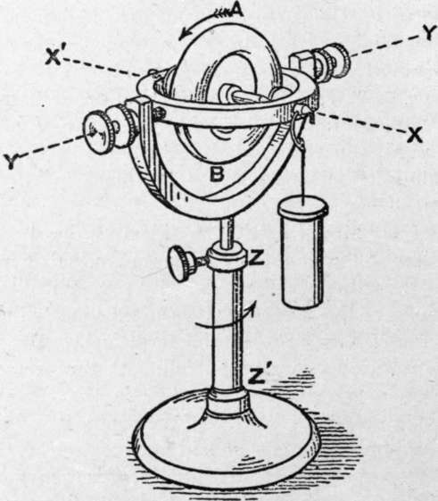
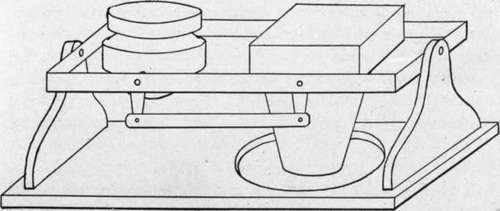

Gyroscopic Mountings
Description
This section is from the book "Airplane Photography", by Herbert E. Ives. Also available from Amazon: Airplane photography.
Gyroscopic Mountings
The ideal support for the aerial camera will undoubtedly be one embodying gyroscopic control of the camera's direction. By proper utilization of the principles of the gyroscope it is to be expected that not only can the camera be maintained vertical, but it may be supported anti-vibrationally as well. At the present time the problem of gyroscopic control is in the experimental stage, so that only the elements of the problem and the possible modes of solution can be laid out.
The gyroscope consists essentially of a heavy ring or disc rotating at a high speed on an axis free to point in any direction (Fig. 79). If mounted so that the axes of the supporting gimbals pass through the center of gravity of the rotating disc, the result is a neutral gyroscope. Its characteristic is that its axis maintains its direction fixed, but this fixity is with respect to space and not with respect to the gravitational vertical. Consequently, as the earth revolves the inclination of the gyroscopic axis changes with respect to the earth. In latitude 45° this change is approximately a degree in five minutes. Furthermore, the action of friction in the supports, which can never be entirely eliminated, also acts to slowly alter the direction of the gyroscopic axis. Therefore, unless some erector is applied even the gyroscope will not perform the task required of it.
Fig. 79. - Diagram of simple gyroscope.
Before discussing possible forms of erectors it may be noted in general, first, that these must depend upon gravity; second, that such being the case, they must respond to the resultant of gravity and any acceleration, that is, to the apparent or pseudo-gravity. As already seen, this pseudo-gravity, during a turn, is exactly what limits the usefulness of the pendular support, and necessitates recourse to the gyroscope. The problem thus becomes one of making an erector-gyroscope combination which will respond to true gravity and not to pseudo-gravity.
In general this problem would be insoluble, since there is no difference in the nature of the acceleration of gravity and that due to centrifugal force. A way out is offered, however, by the fact that true gravity acts continuously and at a small angle to the axis of the gyro, while the components which cause the pseudo-gravity are of short duration, liable to rapid changes of direction, and, on a turn, act at a large angle. What we require, therefore, is an erector which will respond slowly but surely to the average acceleration, which is downward, but too sluggishly to be affected by the shorter period accelerations due to turns or rolls. Slowness of response is a matter of the erecting forces being small and of the mass and angular velocity of the gyro disc being large. The success of the compromise called for depends on the relative times taken for the gyroscope to tilt seriously from the true vertical, due to the causes above mentioned, and for the average turn or roll. Fortunately the former is a matter of minutes, the latter of seconds or at the worst of fractions of a minute. More than this, since the roll or turn is apt to be of much greater angle than any normal deviation of the gyroscopic axis from the vertical in the same time, we are offered the possibility of seme device for filtering out the deviations which alone are to effect the erector. For instance, by shunting the restoring force whenever it is called upon to act through more than a predetermined small angle.
As to the method of erecting the gyroscope, its characteristic property must be kept in mind. This is that the axis does not tilt under an applied force in the direction it would if the gyro were not rotating, but around an axis at right angles to that of the applied couple. Thus in Fig. 79, if a weight is attached as shown, the disc does not incline downward toward the weight, around the axis Y, Y', but precesses about the vertical axis Z, Z'. Some means is therefore needed to translate the pull which any gravitational control, such as a freely swinging pendulum, would give, into a pull with at least a component at a finite angle to this.
In the Gray stabilizer several metal balls are slowly rotated in a tray above the center of gravity of the gyroscope. Specially shaped grooves or compartments limit the freedom of motion of these balls so that when the gyro is inclined the balls travel at different distances from the center on the ascending and descending sides. By this scheme a couple is produced about the axis through the center and the low point of the disc, which tilts the apparatus to the gravitational vertical. In an alternative form the balls are carried past the low point by their momentum and are prevented from returning by the walls of the containing compartment, which have meanwhile been advanced by the rotation of the erector as a whole. The net result is to shift the center of gravity of the system of balls in the proper direction to erect the gyro. The rectifying action is purposely made quite slow so that the displacements of the balls due to pseudo-gravity will be averaged out.
In a design due to Lucian, small pendulums work through electric contacts to actuate solenoids which in turn move small weights in the appropriate directions to give the desired tilt. Response is made fairly quick and delicate, and pseudo-gravity, due to turns and rolls, is rendered inoperative by the contacts breaking whenever the pendulums swing more than three or four degrees. This can only happen if they move too quickly for the erecting forces to than the designs in which a definite couple in the proper direction is provided and it reaches the true vertical only through a circuitous path.
Fig. 80. - Diagram of camera linked to gyroscopic stabilizer.
Three methods of controlling a camera by a gyroscope are suggested. One is to fasten the gyroscope rigidly to the camera and mount the whole system on gimbals. A second is to mount both camera and gyro side by side on gimbals, linking the two so that the camera is moved parallel to the gyro (Fig. 80). A third method is to utilize the gyro to make electric contacts to operate motors which in turn move the camera.
Considerable weight and space are required for a gyroact, reliance being here placed on the characteristic differences of action in respect to time of real and pseudo-gravitational forces.
Besides the neutral gyroscope as just considered there is the pendular or top type, in which the center of gravity is not in the plane of the supports. In general this type depends on a couple resulting from the gravitational pull and the inevitable friction of the supports to slowly tilt the axis to the gravitational vertical. This type is slower to respond scope capable of stabilizing a camera. The rotating disc should be about half the weight of the camera, and with its mounting may be expected to double the room required for the camera alone. Motive power for maintainng the gyro in continuous rotation may be supplied by an air blast, or the gyro may be made up as an induction motor—the latter necessitating an alternating current supply.
In view of the space and weight limitations in a plane it is a question still to be decided whether it is more economical to stabilize the camera or to stabilize an inclinometer and photograph its indications simultaneously with the release of the shutter which takes the aerial picture.
Continue to:
- prev: Pendular Camera Supports
- Table of Contents
- next: Chapter XV. Practical Camera Mountings. General Considerations
Tags
camera, lens, airplane, aerial, film, exposure, photography, maps, birdseye